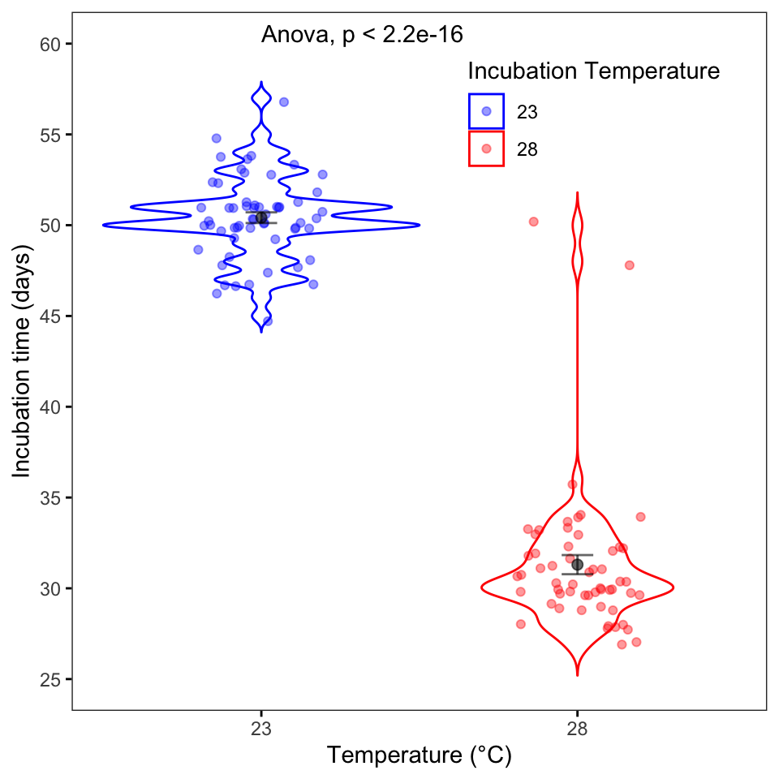
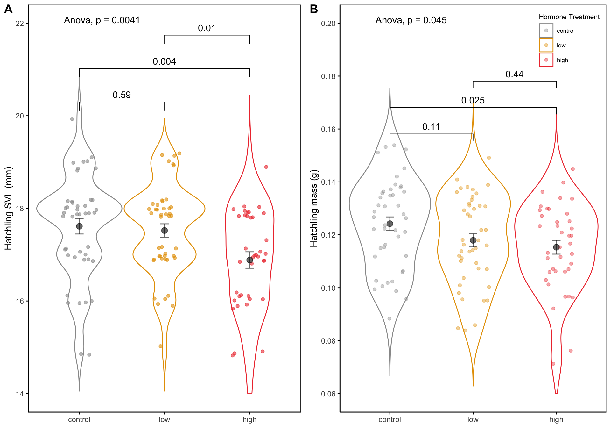
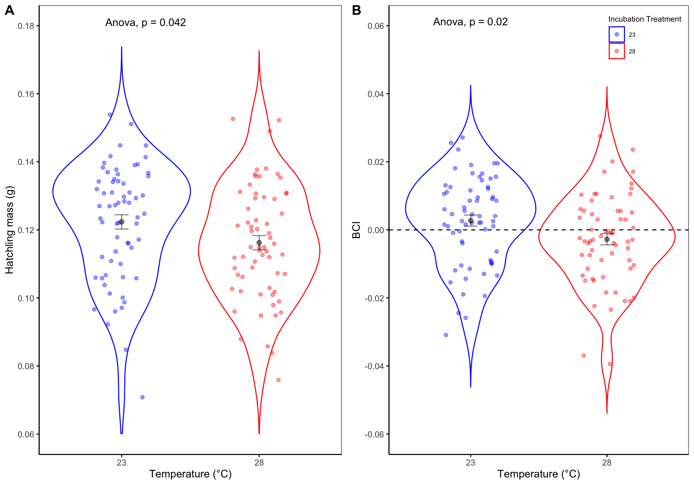
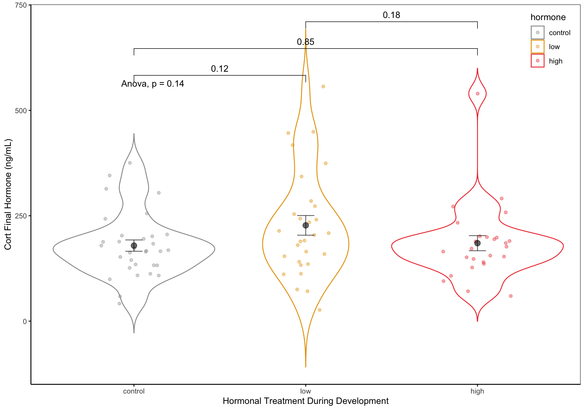
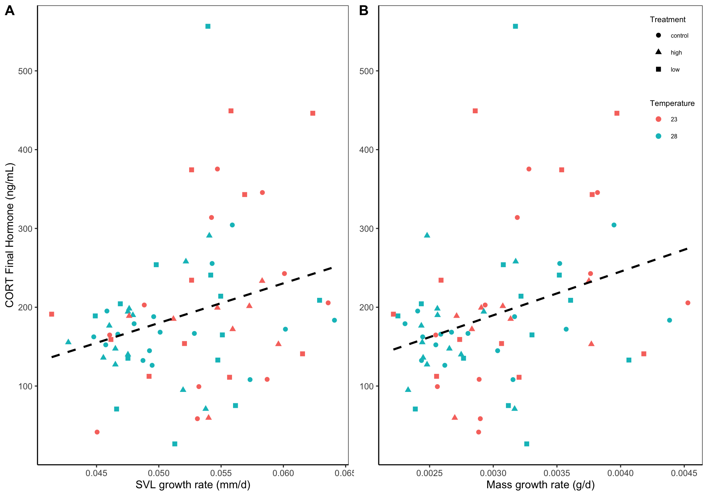
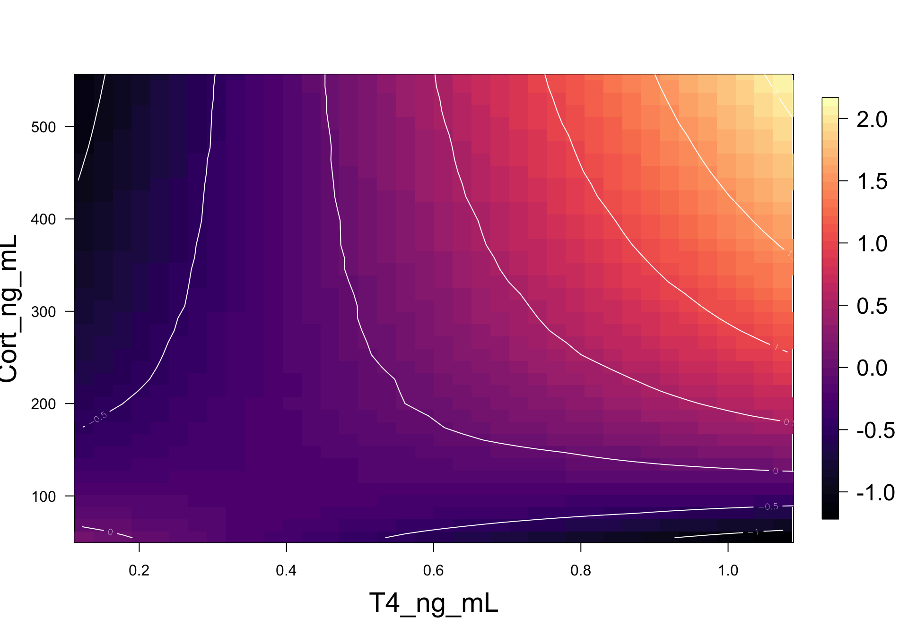
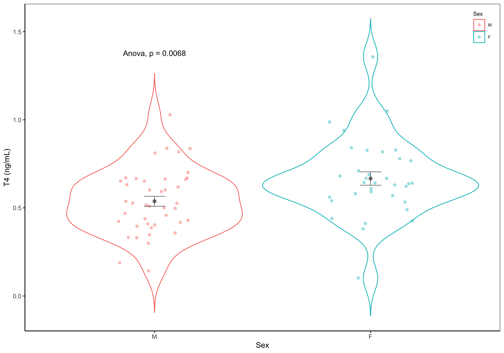

Results
Data description
Below are the models, results, and figures that we discussed last friday. I Still need to include the Mito data in this document. The workflow is all of our analysis data is in the R script “Lampro_Cort_Temp_Analysis.R”. In this document I’m running (and checking) all of our models. Final models are then saved in the folder “models” folder and are named biased off the analysis of interest. These final models are then brought in here and are used in the code and figures below. Above each code chunk are the question(s) being addressed and their results.
Note, I have the results currently by the question of interest but we can reorganize this whatever way we decide is best for telling the story.
Results
a) The effects of developmental treatments (temp, and CORT) on developmental time to hatch
b) The effects of developmental temperature and hormonal treatment on body size, mass, and condition (BCI) of hatchling lizards
c) The effects of developmental temperature and hormonal treatment on body size, mass, body condition (BCI), survival, and growth rate on juvenile lizards
d) Developmental temperature and hormonal treatment on juvenile CORT, T4, and Testosterone
d) Developmental temperature and hormonal treatment on juvenile mitochondrial function
FIGURES:
Figure 1. Incubation temperature effects on developmental time to hatch. Means and SE are provided along with the p-value.

Figure 2. Hatchling morphology body size (SVL) and mass are effected by hormonal treatment during development. Panel A shows hatchling SVL (mm) and panel B shows hatchling mass (g). Colors indicate hormonal treatment during development: control (grey), low (gold), and high (red). Bars above plots indicate pairwise comparisons of morphometric measurements across hormonal treatment. Means and SE intervals are provided along with the p-value for each contrast.

Figure 3. How developmental temperature effects mass (panel A) and body condition (panel B) of hatchling lizards. Colors indicate the incubation temperature that eggs were reared in. Means and SE intervals are provided along with the p-value. Dashed horizontal line in Panel B indicates average condition, points that fall above the line are considered “good” condition and points below line are considered “poor”.

Figure 4. Final CORT measurements (ng/mL) of juvinile lizards based off hormonal treatment during development. Colors indicate hormonal treatment during development: control (grey), low (gold), and high (red). Bars above plots indicate pairwise comparisons of final CORT measurements across hormonal treatment. Means and SE intervals are provided along with the p-value for each contrast.

Figure 5. The relationship final cort measurements and juvenile growth rate. Growth period was determined from hatchling to final measurement (mean = 467 days). Panel A shows SVL change (mm/d) and panel B shows mass change (g/d). Colors show the incubation temperature during development and symbols show the hormonal treatment during development. Overall there were no relationships between incubation temperature during development or hormonal treatment during development and final CORT values. However there was an overall positive relationship between final CORT measurements and growth rate.

Figure 6. Predicted parametric contour plots of mass growth rate as a function of our standardized traits from generalized linear models. Colors indicate the r mass growth rate of individual lizards: dark purple = relative growth rate -1.0 (g) and below, purple = relative growth rate -0.5 and 0.5 (g), red = relative growth rate 0.5 and 1.5 (g), and yellow = relative growth rate greater than 1.5 (g).

Figure 7. Differences in T4 levels between male (red) and female (blue) lizards. Means and SE intervals are provided along with the p-value.